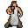

Edrin¶| Stat | Value |
|---|---|
| Class | humanoid |
| HP | 0 |
| Max AP | 10 |
| Attack cost | 10 |
| Move cost | 10 |
| Damage | 0 |
| Attack chance | 0 |
| Block chance | 0 |
| Damage resistance | 0 |
| Critical skill | 0 |
| Critical multiplier | 0 |
Shop stock¶
| Item | Chance | Qty |
|---|---|---|
| Fancy letter opener | 100% | 1 |
| Polished necklace | 100% | 1 |
| Superior steel dagger | 100% | 1 |
| Ring of damage +3 | 100% | 1 |
| Jeweled dagger | 100% | 1 |
| Inlaid scepter | 100% | 1 |
Found on¶
Quests¶
- A strange looking dagger: stages 10, 20, 25, 50, 60, 70, 80, 90, 100
- Delivery - nondisplay (hidden flag): stages 20
Dialogue (26 lines)
What the dialogue says, exactly as in the game files. Lines are listed once; links jump to the line a choice leads to.
edrin_0_0 Edrin: “Hello.”
- “Have you repaired the dagger?” (if reached stage 80 of A strange looking dagger; NOT reached stage 70 of A strange looking dagger; NOT reached stage 90 of A strange looking dagger; NOT reached stage 100 of A strange looking dagger) → edrin_7_0
- “I have a gem. I think it's the right one for the dagger we discussed.” (if reached stage 10 of A strange looking dagger; NOT reached stage 25 of A strange looking dagger; NOT reached stage 70 of A strange looking dagger; NOT reached stage 80 of A strange looking dagger; NOT reached stage 90 of A strange looking dagger; NOT reached stage 100 of A strange looking dagger; carry 1× A strange-looking gem; carry 1× A strange looking dagger) → edrin_5_0
- “I have a dagger. I think it's the one that matches the gem we discussed.” (if reached stage 20 of A strange looking dagger; NOT reached stage 25 of A strange looking dagger; NOT reached stage 70 of A strange looking dagger; NOT reached stage 80 of A strange looking dagger; NOT reached stage 90 of A strange looking dagger; NOT reached stage 100 of A strange looking dagger; carry 1× A strange looking dagger; carry 1× A strange-looking gem) → edrin_6_0
- “Who are you?” → edrin_0
- “I'm looking for my brother, Andor. Have you seen anyone around town that looks a bit like me?” → edrin_1a
- “Do you have anything to trade?” → shop opens
- “Hello, did you order a 'Striped Hammer'?” (if hand over 1× Striped hammer; reached stage 10 of Delivery; reached stage 30 of Delivery) → brv_wh_delivery_edrin
edrin_7_0 (silent check: the first matching branch below is taken)
- branch 1 (if 30 rounds passed since timer “Dagger_repair”; NOT reached stage 30 of brv_dagger_nondisplay (hidden flag); NOT reached stage 40 of brv_dagger_nondisplay (hidden flag)) → edrin_7_1a
- branch 2 (if 30 rounds passed since timer “Dagger_repair”) → edrin_7_1b
- branch 3 → edrin_7_1c
edrin_5_0 Edrin: “Yes, that's the one that matches the dagger! Now that I have both pieces, I can repair the dagger for you if you wish.” — effects: sets stage 50 of A strange looking dagger
- “How much will that cost?” → edrin_5_1
- “I'll think about it.” → conversation ends
edrin_6_0 Edrin: “Yes, that's the one that matches the gem! Now that I have both pieces, I can repair the dagger for you if you wish.” — effects: sets stage 50 of A strange looking dagger
- “How much will that cost?” → edrin_6_1
- “I'll think about it” → conversation ends
edrin_0 Edrin: “I'm Edrin, the Brimhaven metalsmith.”
- “What does a metalsmith do? Is that the same as a blacksmith?” → edrin_1
- “I don't think that's what I'm looking for. Thanks anyway.” → conversation ends
- “Please show me what you have to trade.” → shop opens
edrin_1a Edrin: “Well, yes, there was someone. He came to me to get a sword sharpened. I can't tell you any more than that though.”
- “OK. Thanks. What type of services and products do you supply?” → edrin_1
brv_wh_delivery_edrin Edrin: “Ah, yes, a striped hammer. Don't look so impatient. Here's my delivery charge, and now you can leave!” — effects: clears stage 30 of Delivery, sets stage 20 of Delivery - nondisplay (hidden flag), gives 10× Gold coins
- “Thank you.” → conversation ends
edrin_7_1a Edrin: “Yes, it is done. Here is the repaired dagger. It's nice to see Lawellyn's dagger brought back to its original glory. There is some mystery about his death. I don't know anything about it though. Maybe someone else in town can tell you more.” — effects: gives 1× Assassin's blade, sets stage 90 of A strange looking dagger
edrin_7_1b Edrin: “Yes, it is done. Here is the repaired dagger. It's nice to see Lawellyn's dagger brought back to its original glory. There is some mystery about his death. I don't know anything about it though. Maybe someone else in town can tell you more.” — effects: gives 1× Assassin's blade, sets stage 100 of A strange looking dagger
edrin_7_1c Edrin: “No, not yet. You must have patience. I told you this is a difficult repair.”
edrin_5_1 Edrin: “The best I can offer is 800 gold. The repair is quite delicate, and if done incorrectly it will just be a dagger with a gem in the pommel, and no more.”
- “That's expensive. I'll think about it.” → edrin_5_2c
- “That's too expensive. I'll keep the dagger and the gem I have.” → edrin_5_2a
- “OK. I agree. Here are the dagger and the gem.” (if pay 800 gold; hand over 1× A strange looking dagger; hand over 1× A strange-looking gem) → edrin_5_2b
edrin_6_1 Edrin: “The best I can offer is 800 gold. The repair is quite delicate, and if done incorrectly it will just be a dagger with a gem in the pommel, and no more.”
- “That's expensive. I'll think about it.” → edrin_6_2c
- “That's too expensive. I'll keep the dagger and the gem I have.” → edrin_6_2a
- “OK. I agree. Here are the dagger and the gem.” (if pay 800 gold; hand over 1× A strange looking dagger; hand over 1× A strange-looking gem) → edrin_6_2b
edrin_1 Edrin: “As a metalsmith I'm sort of like a blacksmith, but there is a difference. A blacksmith works with iron and steel, but a metalsmith works with many metals. I do work with iron and steel, but only for smaller, high quality objects. I also…”
- “If you have those skills I would like you to look at two items I purchased locally. A strange-looking dagger and a…” (if carry 1× A strange looking dagger; carry 1× A strange-looking gem; NOT reached stage 10 of A strange looking dagger; NOT reached stage 20 of A strange looking dagger; NOT reached stage 80 of A strange looking dagger; NOT reached stage 70 of A strange looking dagger) → edrin_4_1
- “If you have those skills I would like you to look at something I purchased locally. A strange-looking dagger.” (if carry 1× A strange looking dagger; NOT reached stage 70 of A strange looking dagger; NOT reached stage 50 of A strange looking dagger; NOT reached stage 25 of A strange looking dagger; NOT reached stage 80 of A strange looking dagger; NOT reached stage 20 of A strange looking dagger; NOT carry 1× A strange-looking gem) → edrin_2_1
- “If you have those skills I would like you to look at something I purchased locally. A strange-looking gem.” (if carry 1× A strange-looking gem; NOT reached stage 70 of A strange looking dagger; NOT reached stage 50 of A strange looking dagger; NOT reached stage 25 of A strange looking dagger; NOT reached stage 80 of A strange looking dagger; NOT reached stage 10 of A strange looking dagger; NOT carry 1× A strange looking dagger) → edrin_3_1
- “That's Interesting, but let's talk about something else.” → edrin_0_0
- “I don't think I need the services of a metalsmith right now.” → conversation ends
edrin_5_2c Edrin: “Feel free to come back when you decide.” — effects: sets stage 60 of A strange looking dagger
edrin_5_2a Edrin: “That is up to you, although I think you have made a mistake.” — effects: sets stage 70 of A strange looking dagger
edrin_5_2b Edrin: “This will take me some time. Please come back later to collect the repaired dagger.” — effects: sets stage 80 of A strange looking dagger, starts timer “Dagger_repair”
edrin_6_2c Edrin: “Feel free to come back when you decide.” — effects: sets stage 60 of A strange looking dagger
edrin_6_2a Edrin: “That is up to you, although I think you have made a mistake.” — effects: sets stage 70 of A strange looking dagger
edrin_6_2b Edrin: “This will take me some time. Please come back later to collect the repaired dagger.” — effects: sets stage 80 of A strange looking dagger, starts timer “Dagger_repair”
edrin_4_1 Edrin: “I recognize these. I made the dagger, many years ago, for a man called Lawellyn. Alas, I hear he is now dead. See this recess in the pommel? The gem you have fits in that. It gave the dagger some special properties. If you wish, I can…” — effects: sets stage 25 of A strange looking dagger
- “How much will that cost?” → edrin_4_2
- “I'll think about it.” → conversation ends
edrin_2_1 Edrin: “I recognize this. I made it, many years ago, for a man called Lawellyn. Alas, I hear he is now dead. See this recess in the pommel? There used to be an unusual gem in that. It gave the dagger some special properties. If you can find the…” — effects: sets stage 10 of A strange looking dagger
- “I think I know where to find that. I'll go and get it.” → conversation ends
- “OK. Thanks for the information.” → conversation ends
- “Let's talk about something else.” → edrin_0_0
edrin_3_1 Edrin: “I recognize this. It was used in something I made, many years ago. It was set into the pommel of a dagger I made for a man called Lawellyn. Alas, I hear he is now dead. It gave the dagger some special properties. If you can find the…” — effects: sets stage 20 of A strange looking dagger
- “I think I know where to find that. I'll be right back.” → conversation ends
- “Maybe if I find the time I'll look for it. Let's talk about something else.” → edrin_0_0
- “OK. Thanks for the information.” → conversation ends
edrin_4_2 Edrin: “The best I can offer is 800 gold. The repair is quite delicate, and if done incorrectly it will just be a dagger with a gem in the pommel, and no more.”
- “That's expensive. I'll think about it.” → edrin_4_3c
- “That's too expensive. I'll keep the dagger and the gem I have.” → edrin_4_3a
- “OK. I agree. Here are the dagger and the gem.” (if pay 800 gold; hand over 1× A strange looking dagger; hand over 1× A strange-looking gem) → edrin_4_3b
edrin_4_3c Edrin: “Feel free to come back when you decide.” — effects: sets stage 60 of A strange looking dagger
edrin_4_3a Edrin: “That is up to you, although I think you have made a mistake.” — effects: sets stage 70 of A strange looking dagger
edrin_4_3b Edrin: “This will take me some time. Please come back later to collect the repaired dagger.” — effects: sets stage 80 of A strange looking dagger, starts timer “Dagger_repair”
Community notes¶
Written by players, not generated from game data. Observations: what players notice in-game · Lore: the in-world story · Trivia: real-world facts, references, development history · Theory / speculation: unconfirmed ideas; may just be unfinished content
Observations¶
Nothing here yet. Know something? Add it.
Lore¶
Nothing here yet. Know something? Add it.
Trivia¶
Nothing here yet. Know something? Add it.
Theory / speculation¶
Nothing here yet. Know something? Add it.
Monster ID: brv_metalsmith · Data from v0.8.18